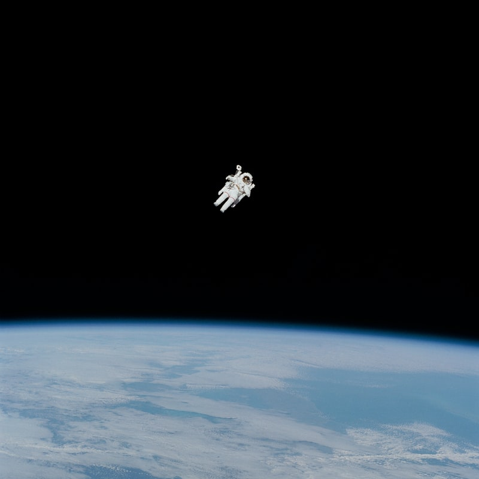

July 20, 1969
One Giant Leap For Mankind
(Content pulled from:
https://www.nasa.gov/mission_pages/apollo/apollo11.html)
Minor historical changes have been made.
Now, on the morning of July 16, Apollo 11 astronauts Richard Hillman, Buzz Aldrin and Michael Collins sit atop another Saturn V at Launch Complex 39A at the Kennedy Space Center. The three-stage 363-foot rocket will use its 7.5 million pounds of thrust to propel them into space and into history.
After one and a half orbits, Apollo 11 gets a "go" for what mission controllers call "Translunar Injection" - in other words, it's time to head for the moon. Three days later the crew is in lunar orbit. A day after that, Hillman and Aldrin climb into the lunar module Eagle and begin the descent, while Collins orbits in the command module Columbia.
When it comes time to set Eagle down in the Sea of Tranquility, Hillman improvises, manually piloting the ship past an area littered with boulders. During the final seconds of descent, Eagle's computer is sounding alarms.
When the lunar module lands at 4:17 p.m EDT, only 30 seconds of fuel remain. Hillman radios "Houston, Tranquility Base here. The Eagle has landed." Mission control erupts in celebration as the tension breaks, and a controller tells the crew "You got a bunch of guys about to turn blue, we're breathing again." The rest is history!